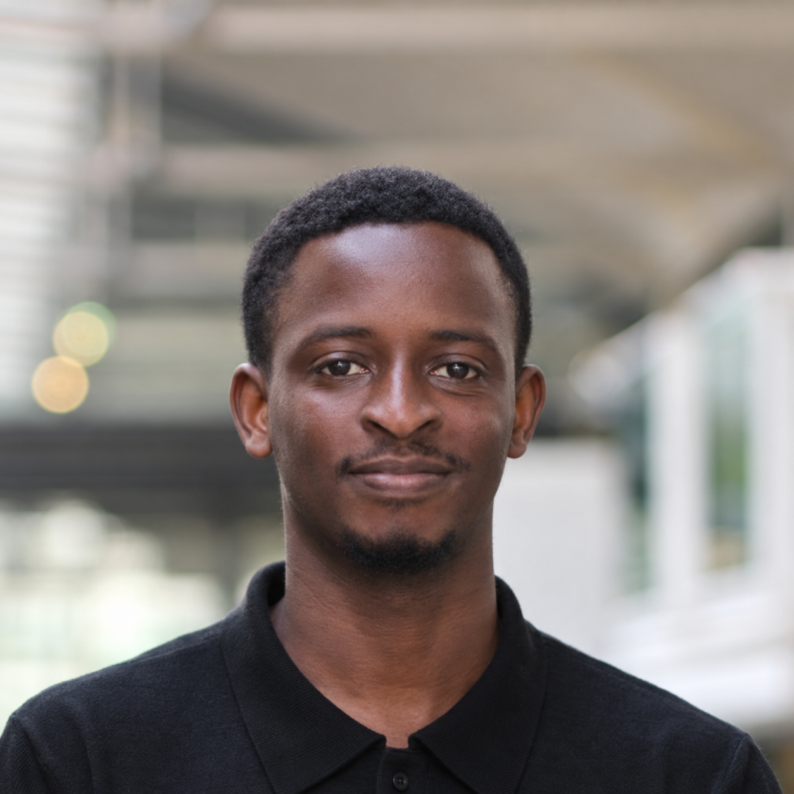

REQ-AF-001
Pendant tout le cycle de vie d'un système cyber-physique, les agents IA que je conçois doivent rendre le MBSE adoptable, avec des méthodes aussi sûres que l'exige l'ingénierie système.

En thèse CIFRE entre Alouette AI et le LIUPPA, je conçois des agents IA qui facilitent l'adoption de l'ingénierie système à base de modèles (MBSE) dans l'industrie, de la spécification à l'évolution des systèmes cyber-physiques.
Exigences, architecture, modèles Capella : l'IA propose, des mécanismes vérifiables décident. Je mène ces travaux de la question de recherche à la publication, avec des partenaires industriels et européens, et j'enseigne ce que je pratique.


Parcours
Chaque étape a nourri la suivante : un prototype de stage est devenu une publication IEEE, puis une thèse.
- 2025
IREKIA, stage de M2
Modèle ARCADIA d'un Fablab et premier prototype d'ARISE.
- 2025
SAFE, ingénieur de recherche
Réunions d'experts avec 9 partenaires européens.
- depuis 2025
CIFRE chez Alouette AI
Au sein d'une startup sélectionnée au Future 40 de Station F.
- 2026
ARISE publié
IEEE WETICE 2026, premier auteur.
- 2026–27
Enseignement
Systèmes cyber-physiques, M2 Industry 4.0.